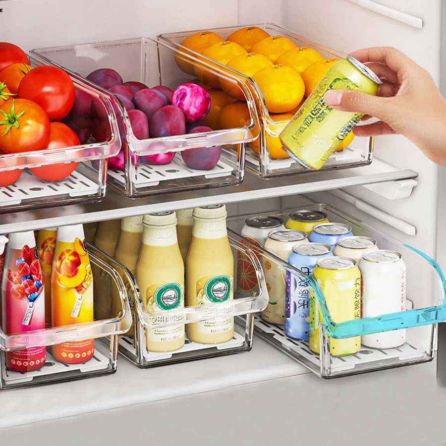
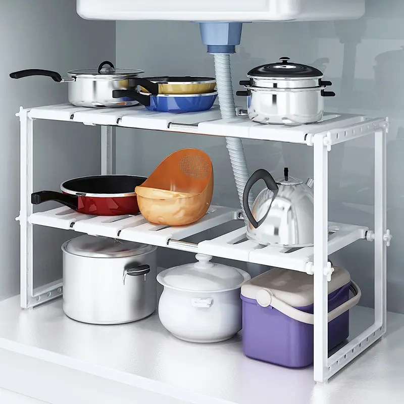
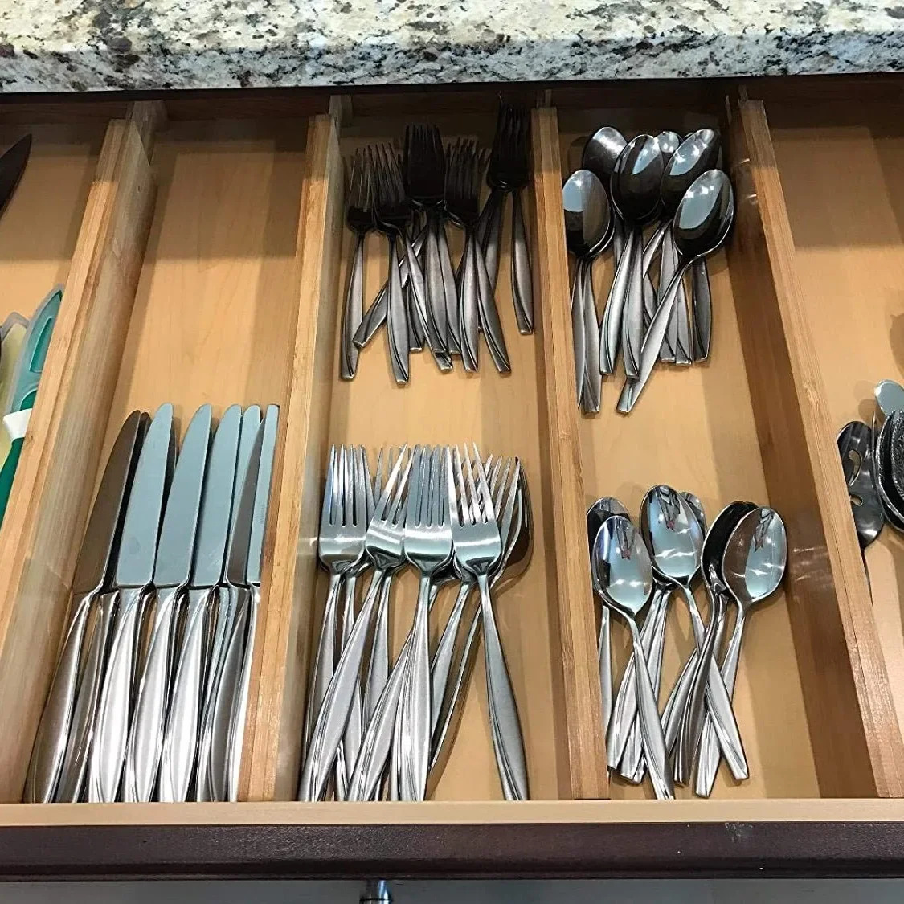
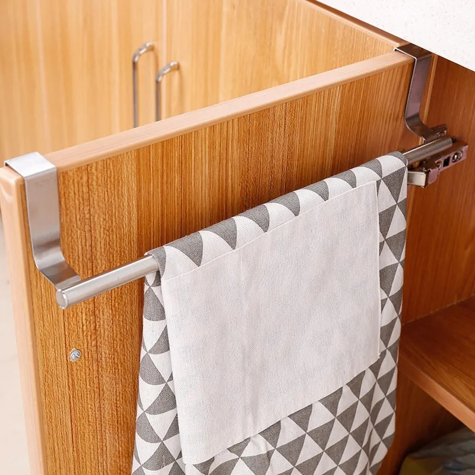
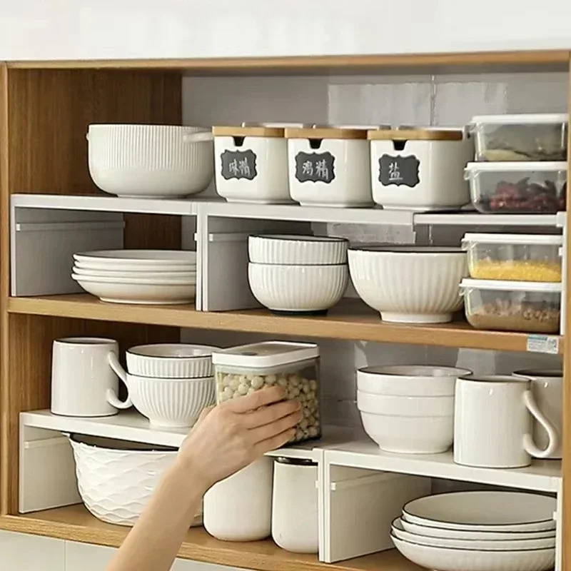
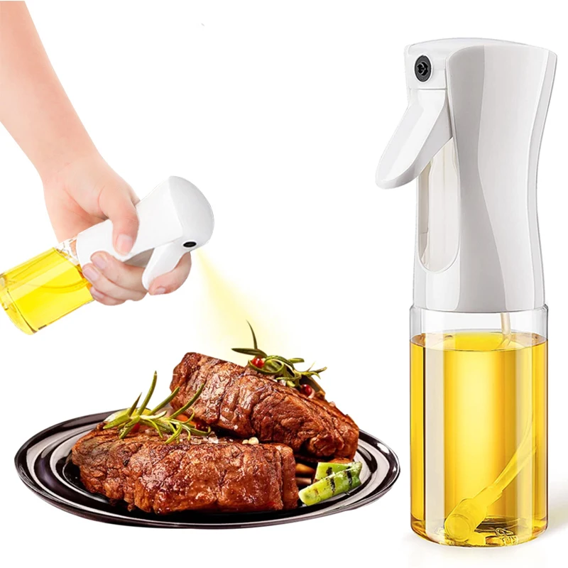
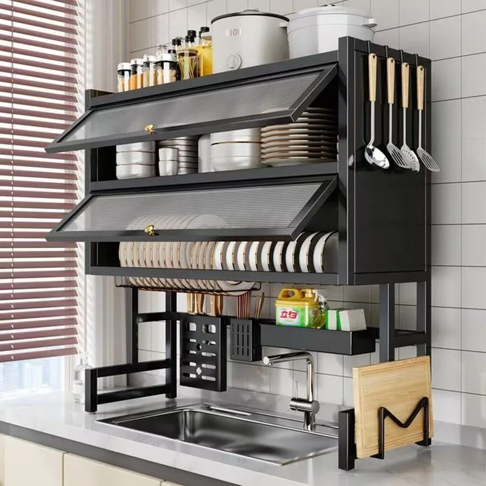
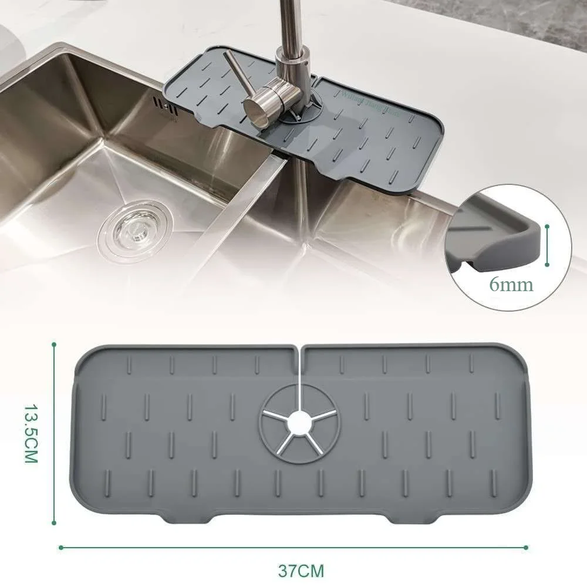

Small-space kitchen picks
Disclosure: links on this page are affiliate links. If you buy, Vigorous Stores may earn a small commission at no extra cost to you. Prices and stock are set by the seller on AliExpress, so check them there before you order.

Photo from the seller's AliExpress listing.
These clear fridge organiser bins sit on a shelf so fruit, drinks and leftovers are easier to see and reach. They can help in a small fridge where things get lost at the back. The listing has more than one size, so check the options and the current price before you buy.

Photo from the seller's AliExpress listing.
This 2-tier under-sink shelf expands to fit a narrow cabinet and keeps bottles, pans and cleaning kit off the cupboard floor. It can work around pipes that get in the way of stacked boxes. Check the measurements and the current price on the listing before you order.

Photo from the seller's AliExpress listing.
These bamboo drawer dividers expand to fit a kitchen drawer and split the space so cutlery and utensils stay in their own sections. The listing shows a few lengths, so check the size and the current price before you buy.

Photo from the seller's AliExpress listing.
This stainless towel bar hangs over a cabinet door, so you can dry tea towels without drilling into the wood. Useful in a rented kitchen or a small space with little wall room. Check the listing for the door thickness it fits and the current price.

Photo from the seller's AliExpress listing.
This stretchable shelf riser sits on a cabinet shelf and adds a second level for cups, bowls and jars. It is a simple way to use the empty height in a cupboard. The listing has size options, so check the width and the current price before you buy.

Photo from the seller's AliExpress listing.
This oil spray bottle gives a fine mist of oil for cooking, baking or the grill, so you can coat a pan or food without pouring a large amount. The listing has more than one size and colour, so check the options and the current price before you buy.

Photo from the seller's AliExpress listing.
This dual-layer rack stands over the kitchen sink and holds dishes, utensils, chopping boards and bottles in one place. It can free up counter space in a small kitchen, though you should check the height and width against your sink before you order.

Photo from the seller's AliExpress listing.
This silicone mat sits around the base of a kitchen tap and catches drips so the worktop beside the sink stays drier. The listing shows a size of 37 by 13.5 cm and more than one colour, so check the fit and the current price before you buy.